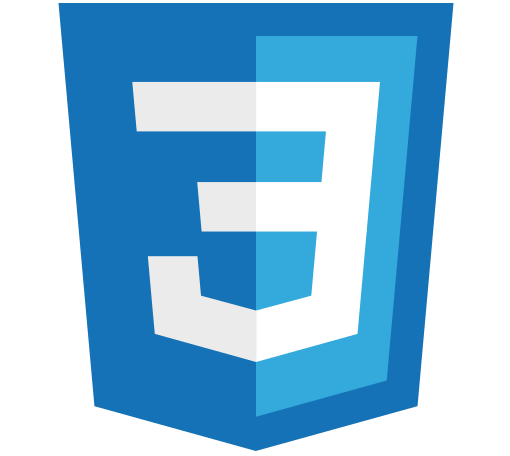
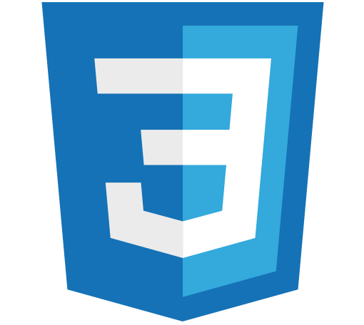
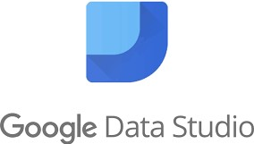
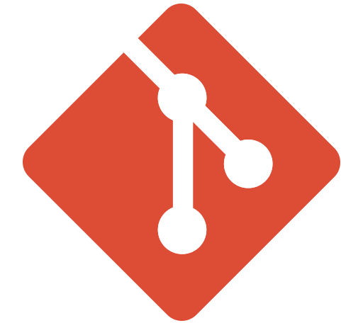
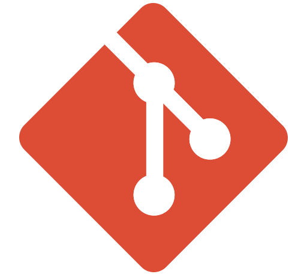

Sobre mí
Cuento con dos años de experiencia como becaria doctoral en el área de Riesgo Ambiental, donde trabajo con datos de todo tipo en equipos multidisciplinarios. Actualmente, me encuentro en la búsqueda de nuevas oportunidades laborales dentro del área IT para seguir desarrollando mis habilidades analíticas e informáticas.
Habilidades
Curiosidad
Siempre tengo el impulso de encontrar respuestas a las preguntas que me formulo.
Creatividad
Tengo una gran facilidad para crear nuevas ideas y encontrar soluciones innovadoras.
Inglés
Egresé en diciembre del 2022 del programa “Inglés para el Trabajo” dictado por Pearson English (curso de inglés orientado a la información y tecnología, equivalente al nivel B2).Lenguajes y frameworks
 



Bases de datos
Herramientas de visualización


Otras herramientas
 


Experiencia
Becaria Doctoral en Temas Estratégicos
CONICET, Buenos Aires
04/2021 — Actualidad
Realicé un análisis estadístico de datos en muestras de sedimentos.
Confeccioné cartografía utilizando tecnologías SIG a partir de datos geoespaciados.
Realicé matrices de ponderación para zonificar los riesgos ambientales de la zona de estudio.
Interpreté necesidades funcionales de la zona de estudio y generé soluciones.
Educación
#YoProgramo
Ministerio de Economía e Instituto Nacional de Tecnología Industrial
10/2022 — 05/2023
Nociones de Scrum y gestión del tiempo.
Arquitectura web.
Uso de Git y GitHub.
Front End: HTML, CSS, Bootstrap, JavaScript, TypeScript y Angular.
Bases de Datos.
Back End: Java, Java Server Pages y Spring Boot.
Full Stack Java
Codo a Codo 4.0
08/2022 — 12/2022
Nociones de Scrum y arquitectura web.
Uso de Git y GitHub.
Front End: HTML, CSS, Bootstrap y JavaScript.
Bases de Datos.
Back End: Java y Java Server Pages.
Big Data
Codo a Codo 4.0
03/2022 — 07/2022
Conceptos sobre bases de datos, big data, lógica, estadística y algoritmos.
SQL.
Excel y Google Data Studio para análisis de datos.
Python orientado a datos.

Licenciada en Ciencias Geológicas
Universidad de Buenos Aires
03/2014 — 03/2020
Durante la licenciatura aprendí sobre cristalografía, óptica, dinámica de fluidos, termodinámica, biología, climatología, mecánica, materiales, topografía, entre otras áreas.
Trabajé con cartografía, sistemas informáticos, representación de datos, gestión ambiental y de riesgo.
En mi Trabajo Final de Licenciatura realicé una caracterización de sedimentos y aguas superficiales dentro de la segunda sección del Delta del Paraná.
Proyectos
Portfolio Web
Mi Portfolio Web donde se pueden visualizar experiencia, educación, habilidades, proyectos realizados, entre otros apartados.
Año: 2023
-
Tecnologías utilizadas:
Registro de pacientes
Página dinámica para una veterinaria donde se puede ingresar información de los pacientes, modificarla y eliminarla de forma simple y atractiva.
Año: 2022
-
Tecnologías utilizadas:
Exploración de datos de comercio
Integración y análisis de sets de datos de registros de la actividad de un comercio a lo largo de los meses para tomar decisiones.
Año: 2022
-
Tecnologías utilizadas: